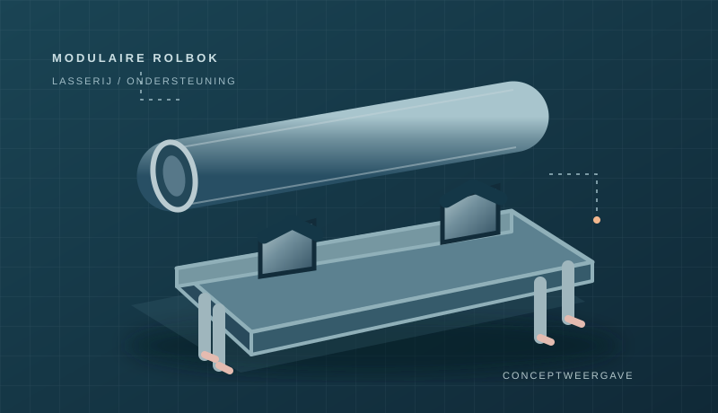

SCHEMATISCHE ILLUSTRATIEModulaire rolbok voor de lasserij
Een flexibel hulpmiddel ontwikkeld om het voorbereiden en ondersteunen van cilinders in de lasserij efficiënter te maken.
Meer over dit project
Tijdens mijn engineeringstage bij WDH Cylinders ontwierp ik een modulaire rolbok. De focus lag op praktisch gebruik, aanpasbaarheid en een ontwerp dat past bij de werkzaamheden van de lassers.
Stage engineering · mei – juli 2026